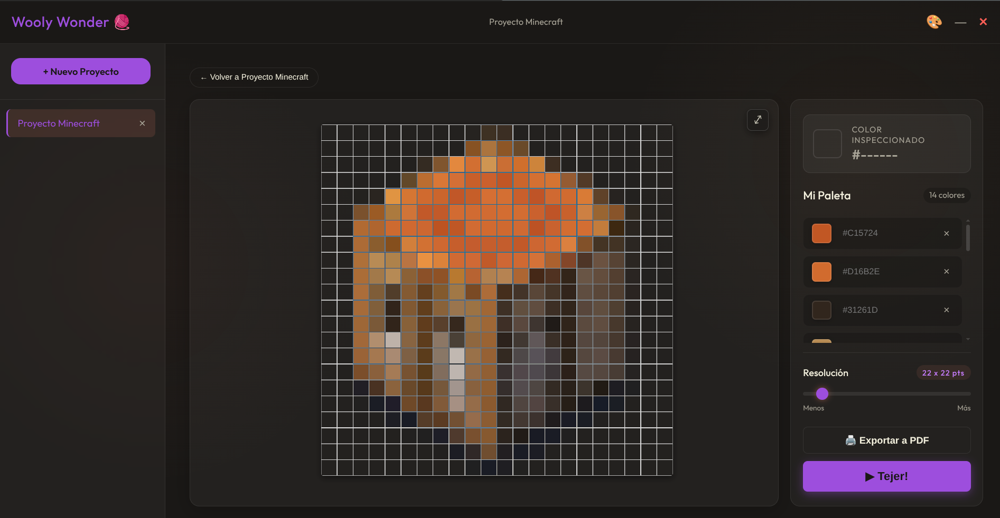
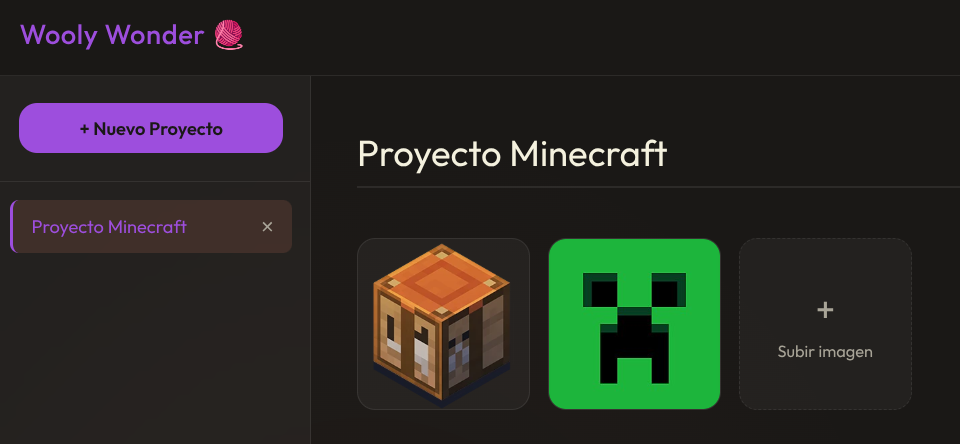
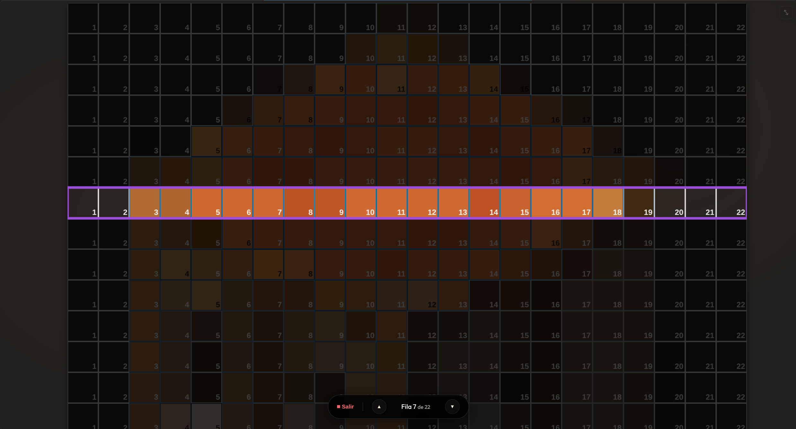
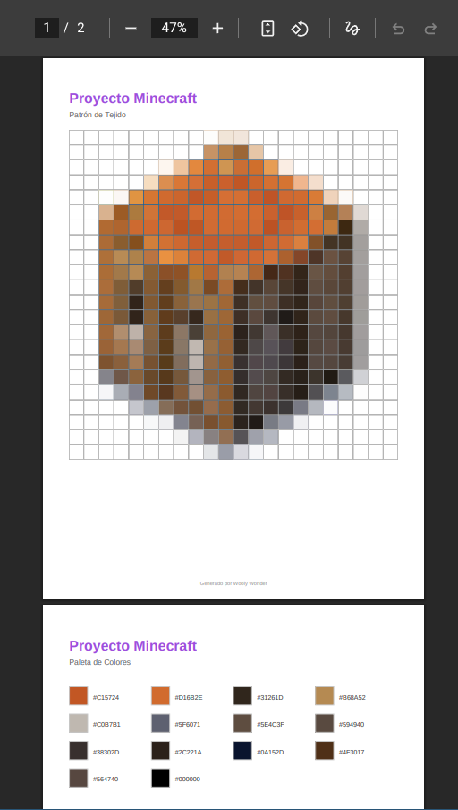

La herramienta de diseño más hermosa, rápida y profesional para tejedoras, artistas del crochet y fanáticas del punto de cruz.

Olvídate del papel cuadriculado y los sitios web anticuados. Wooly Wonder está construido para el artista moderno.
Importa una imagen, ajusta nuestro deslizador inteligente y observa cómo la foto se adapta a la cantidad de puntos que deseas tejer en tiempo real.
Haz clic en cualquier punto de tu diseño y guarda su color en tu Paleta Personalizada para saber exactamente qué hilos comprar.
Un modo de concentración donde resaltas la pantalla fila por fila para enfocar tu atención en el área actual. ¡Adiós a perderse contando!
Genera en un solo clic un documento PDF de alta calidad con tu patrón centrado, números de guía y lista de colores. Listo para imprimir en A4.
No te limites a un solo diseño. Con Wooly Wonder puedes crear proyectos ilimitados y organizar múltiples imágenes, fotos o variantes dentro de cada uno. Todo queda guardado automáticamente para cuando quieras retomar tu trabajo creativo.

Diseñado para que nunca pierdas el hilo. Actívalo para oscurecer el resto de la interfaz e iluminar únicamente la fila en la que estás trabajando. Además, añade de forma inteligente índices numéricos a cada punto de la fila para que avances paso a paso con total concentración y cero distracciones.

¿Prefieres el papel? Genera en un solo clic un documento PDF de alta calidad, listo para imprimir en tamaño A4. Tu patrón se mostrará centrado con números guía en la primera página, seguido de una lista de colores detallada en la segunda para que vayas a comprar tus hilos sin dudas.

Adquiere Wooly Wonder hoy. Sin suscripciones molestas, un solo pago para siempre.
Obtener Wooly Wonder*Pago único, para siempre. Sin suscripciones.